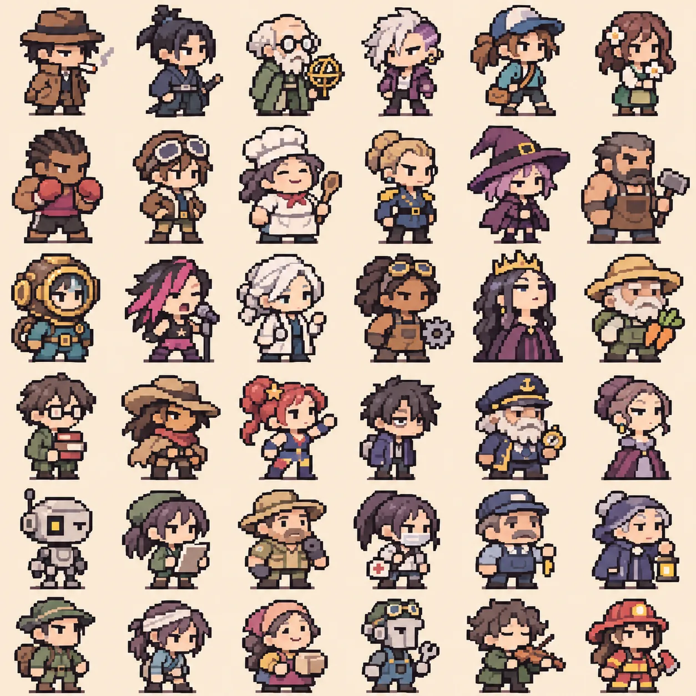

MINI36 · NATIVE PIXEL STUDY
36位24×24原创像素小人
一格就是一个真实逻辑像素：每个人物24×24、14色以内、PNG透明背景；6×6图鉴240×240，展示960×960采用最近邻。支持选角色、逐像素编辑、查看训练候选轮廓、下载修改后的PNG。
研发版本，不是人工验收的完美像素
源图为此前生成的角色概念图。这里保存的是逐格独立、严格色板索引的机器重构版本；自监督神经网络只研究轮廓去噪，没有被证明掌握优秀画师的造型审美。编辑不会自动提交回GitHub，需要手动导出。
36人像素图鉴 · 点击选中
概念图与重构对照
